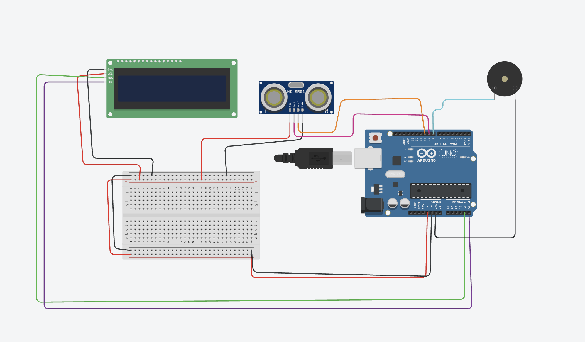
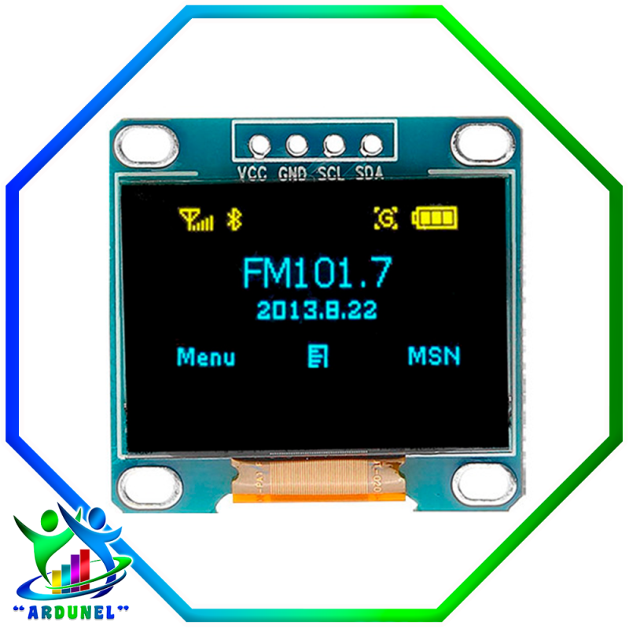
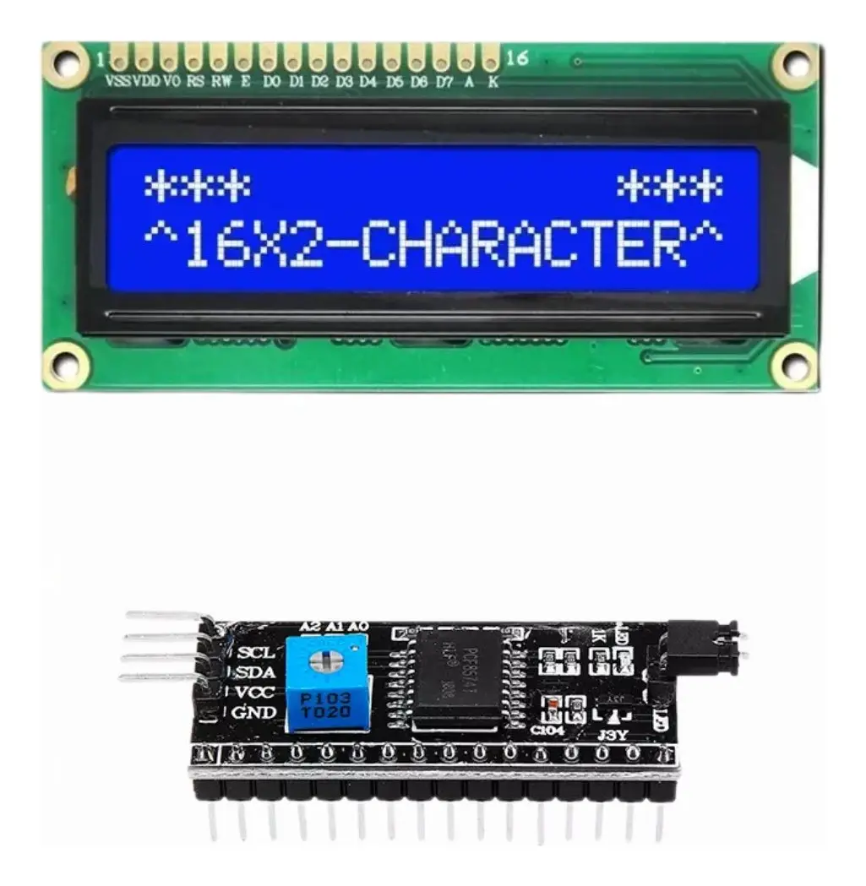
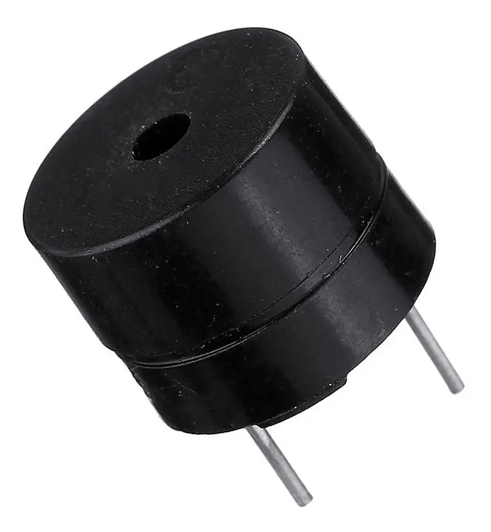
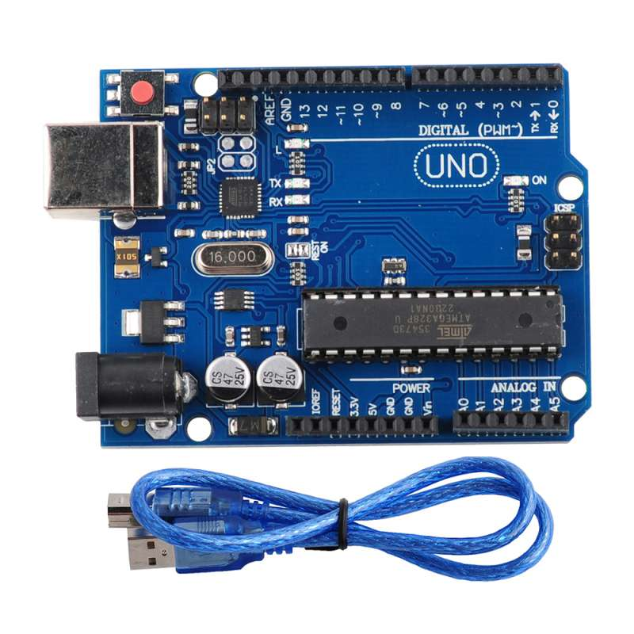
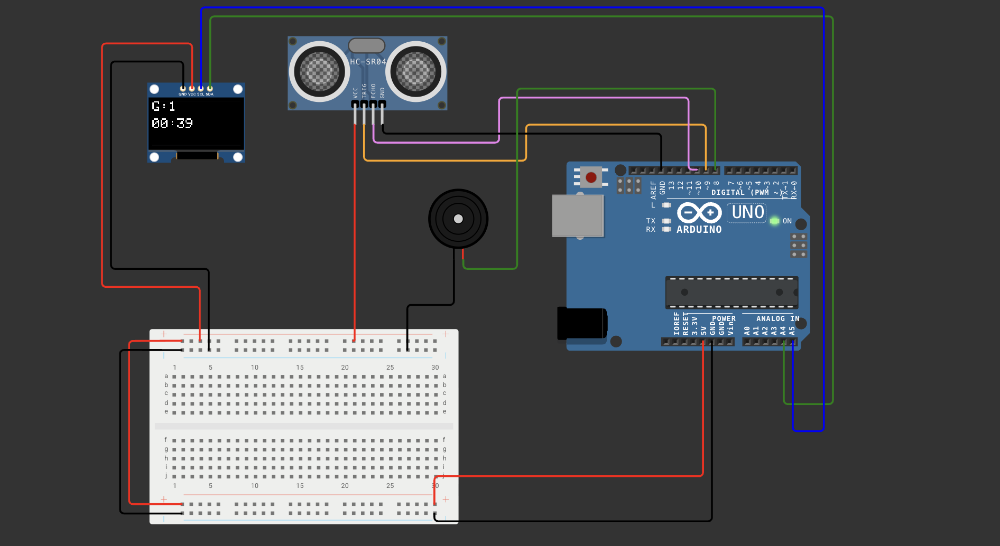

Conocer componentes
Identificaste Arduino, control de motores y partes clave del Robot Soccer.
Fase V · Proyecto Robot Soccer · Práctica 20.1
Detecta goles con un sensor ultrasónico, muestra el resultado en pantalla y celebra cada anotación con sonido.
Objetivo: Construir un marcador inteligente con Arduino, una pantalla LCD I2C u OLED, un sensor ultrasónico HC-SR04 y un buzzer para registrar goles de Robot Soccer de forma automática.
Tus respuestas se guardan automáticamente en este dispositivo. Al terminar, genera el PDF para entregar tu práctica respondida.
En la Práctica 20 conociste los componentes que permiten que un Robot Soccer se mueva, reciba energía y pueda ser controlado. Ahora vamos a mirar otra parte del partido: el marcador.
Imagina que tu robot anota un gol. ¿Quién lo cuenta? ¿Cómo sabe el marcador que el balón realmente entró a la portería? En esta práctica construiremos un sistema capaz de detectar goles automáticamente usando distancia, programación y sonido.

Observa la idea principal: el sistema no solo muestra números. También debe detectar un evento real, decidir si cuenta como gol y actualizar el resultado.
Esta misión se conecta directamente con la práctica anterior: ya reconociste piezas del robot y ahora agregarás tecnología para registrar lo que ocurre durante el juego.
Identificaste Arduino, control de motores y partes clave del Robot Soccer.
Usarás sensor, pantalla y buzzer para construir un marcador automático.
Observarás cómo se organiza físicamente el Robot Soccer terminado.
Presiona el botón para escuchar esta información.
En un partido de fútbol, el marcador es muy importante porque muestra quién va ganando, quién necesita empatar y cuánto cambia la estrategia de cada equipo. No es solo un número en una pantalla: ayuda a entender el momento del juego.
Cuando un equipo anota primero, normalmente aumentan sus posibilidades de ganar. Por eso, el primer gol puede cambiar la actitud de todos. El equipo que va ganando puede defender más y cuidar su ventaja. El equipo que va perdiendo suele atacar con más fuerza para buscar el empate.
Los jugadores también modifican su esfuerzo según el resultado. Si falta poco tiempo y necesitan empatar, corren más, arriesgan más y cambian su forma de jugar. Un solo gol puede transformar por completo una estrategia.
Actualmente, la tecnología deportiva permite registrar goles, mostrar resultados, llevar estadísticas y compartir información en tiempo real. En Robot Soccer podemos aplicar la misma idea: un sensor detecta el paso del balón, Arduino interpreta la señal y el marcador actualiza el resultado para que todos sepan qué ocurrió.

Pantallas y datos: en muchos proyectos electrónicos existen pantallas pequeñas para mostrar información. En esta práctica se puede usar LCD I2C u OLED para visualizar el marcador; lo importante es que los datos del partido sean claros.
Responde con atención. Algunas preguntas se revisan automáticamente y otras requieren tus propias ideas.
¿Por qué el marcador influye en la forma de jugar?
| Situación | Respuesta probable |
|---|---|
| Equipo que va ganando | |
| Equipo que va perdiendo | |
| Tecnología deportiva |
En nuestro sistema, ¿qué componente interpretará la señal del sensor?
Observa de nuevo el marcador. Piensa en lo que ve un jugador, un árbitro y un aficionado durante un partido.
Durante un torneo de Robot Soccer los goles se anotan manualmente. Algunas veces los árbitros se distraen y los equipos discuten porque no están seguros del marcador.
Reto: ¿Cómo podríamos solucionar este problema utilizando tecnología?
Antes de revisar los componentes, responde:
Cada componente tiene una función dentro del marcador. Observa las imágenes y relaciona su trabajo con una parte del partido.

Qué es: una pantalla pequeña que muestra letras y números.
Para qué sirve: permite ver el marcador sin usar la computadora.
Vida diaria: aparece en relojes, aparatos de medición, impresoras y algunos electrodomésticos.
En el marcador: mostrará el número de goles registrados y el tiempo del partido. El código base usa LCD I2C; una pantalla OLED puede cumplir la misma función con su librería correspondiente.

Qué es: un sensor que mide distancia usando ondas de sonido.
Cómo funciona: envía un pulso, espera el eco y calcula qué tan lejos está un objeto.
En la portería: detectará cuando el balón pase frente al sensor.
En el marcador: será el detector de gol.

Qué es: un componente que genera sonidos simples.
Cómo suena: Arduino lo enciende con una frecuencia para producir tonos.
En el partido: puede avisar que hubo gol sin mirar la pantalla.
En el marcador: celebrará cada anotación.

Qué es: una tarjeta programable que lee señales y controla salidas.
Para qué sirve: toma decisiones siguiendo el código que cargamos.
En el sistema: recibe la distancia, decide si cuenta como gol, actualiza la pantalla y activa el buzzer.
En el marcador: actúa como el cerebro.
Selecciona la función correcta. Cada componente tiene una misión principal.
| Componente | Función en el marcador |
|---|---|
| LCD I2C u OLED | |
| Sensor ultrasónico | |
| Buzzer | |
| Arduino |
El objetivo no es memorizar cables, sino comprender qué información o energía viaja por cada conexión.
Simulación: puedes simular el marcador con LCD en Tinkercad o Wokwi. Si vas a usar pantalla OLED, realiza la simulación en Wokwi, porque ahí puedes trabajar mejor con el módulo OLED SSD1306 y sus librerías.
Si usas LCD I2C, conecta VCC a 5V y GND a tierra. Conecta SDA a A4 y SCL a A5 en Arduino UNO. Si usas OLED I2C, también utilizarás SDA y SCL, pero el código necesita la librería de OLED indicada por el profesor.
Conecta VCC a 5V y GND a tierra. El pin TRIG enviará el pulso de sonido y el pin ECHO recibirá la respuesta para calcular distancia.
Conecta la terminal positiva del buzzer al pin digital 8 y la terminal negativa a GND. Arduino activará tonos cortos cuando se registre un gol.
Coloca el sensor mirando hacia la entrada de la portería. La pantalla debe quedar visible para los jugadores y el buzzer en un lugar donde pueda escucharse sin estorbar el balón.

Elige el código según la pantalla que utilizarás. La versión con LCD I2C puede probarse en Tinkercad o Wokwi. La versión con OLED debe simularse en Wokwi.
Este código detecta cuando un objeto se acerca al sensor, cuenta un gol una sola vez, actualiza la LCD I2C, muestra el cronómetro y escribe mensajes en el Monitor Serie.
#include <Wire.h>
#include <LiquidCrystal_I2C.h>
// Cambia 0x27 por 0x3F si tu LCD no muestra texto
LiquidCrystal_I2C lcd(0x27, 16, 2);
const int trigPin = 9;
const int echoPin = 10;
const int buzzer = 8;
const int distanciaGol = 15;
int goles = 0;
bool golDetectado = false;
long duracion;
float distancia;
unsigned long inicioPartido;
unsigned long tiempoActual;
int minutos;
int segundos;
void setup() {
Serial.begin(9600);
pinMode(trigPin, OUTPUT);
pinMode(echoPin, INPUT);
pinMode(buzzer, OUTPUT);
lcd.init();
lcd.backlight();
inicioPartido = millis();
lcd.setCursor(0, 0);
lcd.print("ROBOT SOCCER");
lcd.setCursor(0, 1);
lcd.print("INICIANDO...");
Serial.println("=== MARCADOR INICIADO ===");
Serial.println("LCD lista");
Serial.println("Ultrasonico listo");
Serial.println("Buzzer listo");
Serial.println("Cronometro listo");
delay(2000);
lcd.clear();
}
void loop() {
distancia = medirDistancia();
actualizarTiempo();
mostrarMarcador();
Serial.print("Distancia: ");
Serial.print(distancia);
Serial.print(" cm | Goles: ");
Serial.print(goles);
Serial.print(" | Tiempo: ");
imprimirTiempoSerial();
Serial.println();
if (distancia > 0 && distancia < distanciaGol && !golDetectado) {
goles++;
golDetectado = true;
Serial.println("*** GOOOOL! ***");
lcd.clear();
lcd.setCursor(0, 0);
lcd.print("GOOOOL!!!");
lcd.setCursor(0, 1);
lcd.print("GOLES: ");
lcd.print(goles);
sonidoEstadio();
delay(1500);
lcd.clear();
}
if (distancia >= distanciaGol) {
golDetectado = false;
}
delay(200);
}
float medirDistancia() {
digitalWrite(trigPin, LOW);
delayMicroseconds(2);
digitalWrite(trigPin, HIGH);
delayMicroseconds(10);
digitalWrite(trigPin, LOW);
duracion = pulseIn(echoPin, HIGH, 30000);
if (duracion == 0) {
return -1;
}
return duracion * 0.0343 / 2;
}
void actualizarTiempo() {
tiempoActual = millis() - inicioPartido;
int totalSegundos = tiempoActual / 1000;
minutos = totalSegundos / 60;
segundos = totalSegundos % 60;
}
void mostrarMarcador() {
lcd.setCursor(0, 0);
lcd.print("GOLES: ");
lcd.print(goles);
lcd.print(" ");
lcd.setCursor(0, 1);
lcd.print("TIEMPO: ");
if (minutos < 10) lcd.print("0");
lcd.print(minutos);
lcd.print(":");
if (segundos < 10) lcd.print("0");
lcd.print(segundos);
lcd.print(" ");
}
void sonidoEstadio() {
tone(buzzer, 1000);
delay(200);
tone(buzzer, 1500);
delay(200);
tone(buzzer, 2000);
delay(300);
noTone(buzzer);
}
void imprimirTiempoSerial() {
if (minutos < 10) Serial.print("0");
Serial.print(minutos);
Serial.print(":");
if (segundos < 10) Serial.print("0");
Serial.print(segundos);
}golDetectado evita contar muchos goles mientras el balón sigue frente al sensor.millis() calcula los minutos y segundos desde que inicia el partido.Usa esta versión cuando tu marcador tenga pantalla OLED SSD1306. Para simularla, crea el circuito en Wokwi y agrega las librerías Adafruit_GFX y Adafruit_SSD1306.
Diagrama OLED: conserva el sensor ultrasónico en los pines 9 y 10, el buzzer en el pin 8 y conecta la pantalla OLED por I2C usando SDA y SCL.
#include <Wire.h>
#include <Adafruit_GFX.h>
#include <Adafruit_SSD1306.h>
#define SCREEN_WIDTH 128
#define SCREEN_HEIGHT 64
Adafruit_SSD1306 display(
SCREEN_WIDTH,
SCREEN_HEIGHT,
&Wire,
-1
);
const int trigPin = 9;
const int echoPin = 10;
const int buzzer = 8;
const int distanciaGol = 15;
int goles = 0;
bool golDetectado = false;
unsigned long inicioPartido;
long duracion;
float distancia;
void setup() {
Serial.begin(9600);
pinMode(trigPin, OUTPUT);
pinMode(echoPin, INPUT);
pinMode(buzzer, OUTPUT);
if (!display.begin(
SSD1306_SWITCHCAPVCC,
0x3C)) {
Serial.println("OLED no encontrada");
while (true);
}
display.clearDisplay();
display.setTextSize(2);
display.setTextColor(WHITE);
display.setCursor(0, 0);
display.println("SOCCER");
display.setTextSize(1);
display.println("Iniciando...");
display.display();
delay(2000);
inicioPartido = millis();
}
void loop() {
distancia = medirDistancia();
mostrarMarcador();
if (distancia > 0 &&
distancia < distanciaGol &&
!golDetectado) {
goles++;
golDetectado = true;
Serial.print("GOOOL -> ");
Serial.println(goles);
celebrarGol();
}
if (distancia >= distanciaGol) {
golDetectado = false;
}
delay(100);
}
float medirDistancia() {
digitalWrite(trigPin, LOW);
delayMicroseconds(2);
digitalWrite(trigPin, HIGH);
delayMicroseconds(10);
digitalWrite(trigPin, LOW);
duracion = pulseIn(
echoPin,
HIGH,
30000
);
if (duracion == 0) return -1;
return duracion * 0.0343 / 2;
}
void mostrarMarcador() {
unsigned long tiempo =
(millis() - inicioPartido) / 1000;
int minutos = tiempo / 60;
int segundos = tiempo % 60;
display.clearDisplay();
display.setTextSize(2);
display.setCursor(0, 0);
display.print("G:");
display.print(goles);
display.setTextSize(2);
display.setCursor(0, 25);
if (minutos < 10)
display.print("0");
display.print(minutos);
display.print(":");
if (segundos < 10)
display.print("0");
display.print(segundos);
display.display();
}
void celebrarGol() {
display.clearDisplay();
display.setTextSize(2);
display.setCursor(5, 10);
display.println("GOOOL!");
display.setTextSize(1);
display.setCursor(10, 40);
display.print("Total: ");
display.print(goles);
display.display();
tone(buzzer, 1000);
delay(200);
tone(buzzer, 1500);
delay(200);
tone(buzzer, 2000);
delay(300);
noTone(buzzer);
delay(1500);
}0x3C y resolución de 128 x 64 píxeles.G: y el cronómetro en formato minutos:segundos.Registra tus pruebas. Cambia la distancia del balón y verifica si el sistema cuenta correctamente.
| Prueba | Distancia detectada | Goles en pantalla | Resultado |
|---|---|---|---|
| 1 | |||
| 2 | |||
| 3 | |||
| 4 |
El marcador actual cuenta goles para una portería. Propón una mejora para hacerlo más completo.
En Robot Soccer, la tecnología no solo mueve robots. También puede detectar eventos, registrar información, apoyar decisiones y mejorar la experiencia de juego.
Profesor: ____________________________________